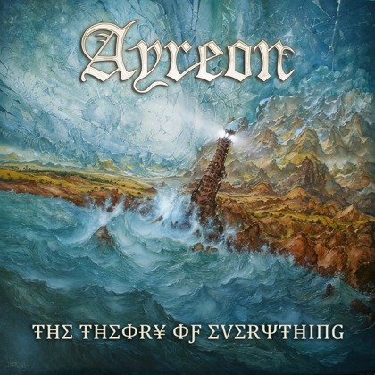

Physics in Metal
Metal bands aren't afraid to tackle serious topics in their lyrics. Here, we look at metal songs that deal with concepts in theoretical physics and cosmology.
- Parimal Satyal, 2 november 2015
I was listening to Stratovarius' Event Horizon after a very long time when I realized that it was in fact actually about the event horizon of a black hole. The song is a bit silly—it involves someone approaching a black hole in a spaceship with an onboard computer that has a vaguely Russian accent—but the lyrics do make several assertions that have a foundation in science.
Stratovarius is just one of many metal bands to tackle subjects like black holes, relativity and string theory. I thought it'd be fun to look at some and try to understand the science.
I should say at this point that I have no training in physics and that my explanations are simply those of a very interested layperson. If you're a physicist or a physics student and you spot inaccuracies, let me know! (Or send a pull request on GitHub).
Event Horizon - Stratovarius
Let's start with this verse:
Nothing escapes
And the boundary's been breached
All matter and shape
Destination's reached
The 'boundary' here is the event horizon, that threshold beyond which no matter or radiation can counter the immense gravity of a black hole and is warped back in. In other words, "nothing escapes". This is why a black hole is black; light particles beyond the event horizon aren't visible to the outside observer.
The "destination's reached" bit is interesting. Let's assume that by "destination" we mean the event horizon and not the singularity of infinite gravity at the heart of a black hole, which would arguably be your ultimate destination if you were falling in. This, however, depends on who's observing.
If you were observing something falling into a black hole, you'd never actually see it reach the event horizon because of time dilation (their time would slow down in relation to you); the destination would never be reached. But if you were the one being sucked in (whoops!), you might both be reach your destination (and be annihilated in the process) and survive (as information, not your human form) somewhere near the event horizon. At least, according to the holographic principle put forward by Gerard't Hooft and Leonard Susskind. This principle also suggests, by the way, that we might be living in a hologram, kind of. We should understand all this a little better by the end of this year.
Back to the song:
A star dies, collapsing in its core
End of the journey, it won't be seen anymore
This is essentially essentially how (some) black holes form. A massive star runs out of nuclear fuel, is unable to produce enough energy to counter its own gravity and quite literally collapses into its core. It's the "the end of the journey" for a star and "it won't be seen anymore" because, well, no light gets past the event horizon. (Some black holes form accretion disks that can be quite bright and visible, like Gargantua from Interstellar. But let's say this one doesn't have one.)
Finally, we have the the chorus:
I can see the point of no return
And when the light is slowly turning to red
The "point of no return" is often how an event horizon is described and you would be able to see it as the boundary where the "black" part of the black hole starts. But why is the light "slowly turning to red"? Because electromagnetic radiation (like light) being pulled into a black hole is redshifted; the wavelength increases and is shifted towards the infrared side of the spectrum. So visible light would indeed turn reddish, and then perhaps not too slowly shift beyond visible light.
Kudos to Stratovarius for writing a mostly scientifically-accurate song about black holes. Now how about explaining that spaceship with a Russian-sounding onboard computer?
Bruce Dickinson - Navigate the Seas of the Sun
Bruce Dickinson is someone I admire almost as much as Richard Feynman or Carl Sagan. His lyrics are often reflective, contemplative and introspective. Navigate the Seas of the Sun has a particularly poetic quality and captures that sense of wonder, that desire to know and understand, that is so important to science. And it references Einstein.
Take this verse:
Purple gold and blue
Living colors every hue
Flowers in the garden of the gods
No one can ever know
If you never saw them grow
This darkness is really full of light
If you look at images of distant galaxies and nebulae taken by the Hubble space telescope, you know exactly what Bruce is referring to. Our universe, even just the tiny bit we've observed, is an explosion of color. It's beautiful and awe-inspiring.
As beautiful as the universe is in wavelengths that our eyes are able to see (the visible spectrum), it is arguably as beautiful in infrared, x-ray or ultraviolet light. With the expansion of the universe since the big bang, much of the original radiation has redshifted beyond visible light, so space appears dark and cold to us. But there's lots happening. We wouldn't know it if we didn't have special instruments but the darkness is indeed "really full of light", just not visible light.
Next, we move to Einstein:
If God is throwing dice
And Einstein doesn't mind the chance
We'll navigate the Seas of the Sun
I love this bit. It refers to Einstein's stubborn refusal to accept the probabilistic nature of reality described by quantum mechanics. He famously said that "God doesn't play dice with the universe". He even derided the notion of entanglement as "spooky action at a distance" (spukhafte Fernwirkung in German), spooky because it's absurd.
Why? Because entangled particles break the notion of locality that is very important in classical physics. The quantum state of entangled particles seem to be correlated regardless of distance. So reversing the spin of a photon here in Paris would (almost) instantly reverse the spin of its entangled cousin, say, in Mars. That information would travel seemingly faster than the speed of light. Presposterous! Except in this case, Einstein was wrong and entanglement has so far remained unfalsifiable. In fact, it was experimentally demonstrated just last month by scientists at the Delft University of Technology.
Stephen Hawking wrote in an old essay:
...it seems that even God is bound by the Uncertainty Principle, and can not know both the position, and the speed, of a particle. So God does play dice with the universe.
Einstein didn't live long enough to witness how far quantum mechanics would come, but if he had, I'd like to think he would have accepted the results. I don't think he would "mind the chance" at all.
Side-note: I've actually recorded a cover of this song. You can listen to it on my music page.
Ayreon - The Theory of Everything

And finally, we have Ayreon. Where do I even start? This entire album is Arjen Anthony Lucassen's metal opera love-letter to physics and the scientific quest to understand the true nature of reality.
In The Theory of Everything we have the "Prodigy", a savant with a gift for numbers and also the son of a physicist obsessed with finding the theory of everything. The story revolves around his struggle to come to terms with a physical world that is very different from the mathematical one in his mind. Throughout, we get some excellent physics.
The album is basically four twenty-minute songs that are further divided into 42 smaller sections (you know why). In 'Singularity', the Father sings:
One single master equation
Unification of the great and small
I hear the notes but the arrangement is wrong
And I'm starting to doubt, but I can't give up now I'm so near
His words underline the current state of physics: our inability to reconcile Einstein's relativity, which describes "the great" (gravity, orbital mechanics, black holes) and quantum mechanics, which describes the "small" (the world of atoms, quarks, electromagnetic and nuclear forces, Higgs boson). Today, we have two different frameworks that describe things very well at their respective scales but they're mutually incompatible! The main culprit is gravity. We've been at it for a very long time and although we're inching closer, we're still very far from coming up with that elusive "one single master equation".
One promising if controversial approach is superstring theory, a framework that basically reduces everything to tiny vibrating one-dimensional supersymmetric strings. This is what the Father is referring to in the preceding verse:
I'm so close to the answer
A dazzling symphony of cosmic strings
I feel the pulse, vibrating just out of reach
The music of space
String theory started out quite elegantly and has now grown into something of a mess with five different versions. Given the Father's assertions about hearing the notes (strings vibrate at different frequencies, like on a guitar) but not being able to figure out the right arrangement, I'm guessing he's string theorist who is frustrated because he knows that it's the correct approach but can't quite figure out how it all fits together.
The Prodigy later reveals to a psychologist:
I see things that don’t belong
In this four-dimensional world
There is so much more beyond
More to unveil, more to reveal
The math in string theory describes a universe beyond our four (three spatial, one temporal) dimensions, but we can't quite see it yet. In fact, a unified version of superstring theory admits as many as eleven dimensions! But it all remains theoretical.
The finale is a fascinating duet between Father and Son that is just just jam-packed with physics. It even includes a handy check-list of things to accomplish if you want to take a stab at the theory of everything yourself:
Isolate the graviton
Verify the Higgs-Boson ✓
Photons, hadrons
Gluons, fermions
Demonstrate the tachyon
Find the missing baryons
Neutrons, protons
Nucleons, electrons
Ride a wave of gravity
Unravel super symmetry
Position x, sparticles
Momentum p, dark energy
Einstein’s relativity
Meets Heisenberg’s uncertainty
Causality, eternity
Singularity, infinity!
Luckily, you can (almost) check step 2 off the list. Scientists working at the Large Hadron Collider at CERN detected particles consistent with the Higgs boson, previously only mathematically predicted to exist in (and required by) the Standard Model. Our understanding is still quite rudimentary, but that should all change once the Circular Electron Positron Collider in China goes operational in about 15 years.
Tachyons, by the way are very interesting. They're imaginary particles that can travel faster than the speed of light. This, of course, should be impossible in our non-imaginary universe since it would violate the principle of causality. But apparently, and all this is beyond me, there are very special conditions in which they could very well exist (but not allow information to travel faster than the speed of light).
So "demonstrating the tachyon" could be problematic. But don't let it stop you.
Metal in Physics
So far we've looked at physics in metal, but it turns out you can also have metal in physics. Piotr Traczyk is a physicist working at the lesser-known CMS (Compact Muon Solenoid) particle detector at CERN, which observes new particles created from collisions in the Large Hadron Collider. He's also a metalhead and a guitarist.
Piotr wrote a metal song based on the "sonification" of CMS data plots:
I decided to take two plots from the Higgs discovery seminar of 4 July 2012: the Higgs-search mass plots in the gamma-gamma and 4-lepton channels. They both have about 20 bins in the histograms, so taking the first 16 bins and assigning each bin to a sixteenth note I could have a single bar of music representing each plot.
You can listen to Piotr Traczyk's Higgs Boson Sonification on YouTube.
Thoughts, corrections, suggestions
I hope you enjoyed this. Again, I have no training in physics, just a whole lot of interest in cosmology (and metal). If you spot inaccuracies, I would love to hear from you! Drop me an email or send a pull request (this blog is open source).
I'd also like to hear from you if you know other metal songs that deal with physics. I know Nightwish's most recent album Endless Forms Most Beautiful (which is a Darwin quote) has a song about the formation of Earth and the single Élan even has a song about Carl Sagan! But I don't have the album yet, so maybe I'll save that for another post.
Minor edit: A previous version of this article contained a reference to Schrödinger's cat that isn't particularly relevant (or accurate) in the context of imagining objects falling into black holes. I've removed that bit.
About comments: This website doesn't have a comments system yet but this essay made it to the front-page of Hacker News so feel free to leave comments there.
— ← back home